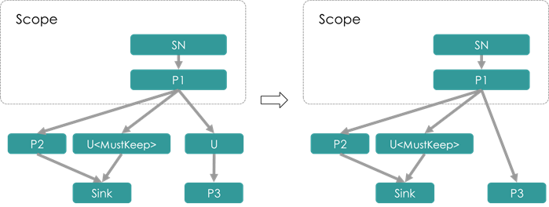
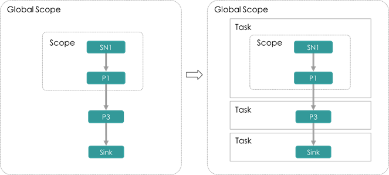

模块设计¶
Core API(LogicalPlan)¶
作为逻辑计划层，与LogicalPlan与分布式计算引擎无关，因此完全沿用已有的设计/实现
SparkPlanner¶
逻辑计划定义(proto描述)¶
一个或多个PbSparkTask(按照Shuffle划分后的执行树)构成一个PbSparkRDD，一个或多个PbSparkRDD构成 PbSparkJob
message PbSparkJob {
repeated PbSparkRDD rdd = 1;
}
message PbSparkRDD {
enum Type {
INPUT = 1; // 从外部读入数据，类似于DCE Mapper
GENERAL = 2; // 从Shuffle读入数据，类似于DCE Reducer
}
optional uint32 rdd_index = 1;
repeated PbSparkTask task = 2; // 当同层RDD合并时，一个RDD包含多个Task
repeated uint32 parent_rdd_index = 3; // Lineage info
optional uint32 concurrency = 4; // Partition数，当同层RDD合并时，它们的Concurrency同样合并
}
message PbSparkTask {
optional uint32 task_index = 1;
optional Type type = 2;
// Not needed maybe
optional uint32 rdd_index = 3;
optional uint32 concurrency = 4 [default = 1]; // Task所包含的Partition数
optional uint32 partition_offset = 5 [default = 0]; // 同层RDD合并时，Task所属的Partition偏移值
optional PbHadoopInput hadoop_input = 101; // INPUT类RDD包含
optional PbShuffleInput shuffle_input = 102; // GENERAL类RDD包含
optional PbShuffleOutput shuffle_output = 103; // 所有RDD都包含
optional PbExecutor root = 201; // Executor Tree根节点
message PbHadoopInput {
optional string id = 1;
optional PbEntity spliter = 2;
repeated string uri = 3;
optional string input_format = 4;
}
message PbShuffleOutput {
message Channel {
required string from = 1;
required PbScope transfer_scope = 2;
required PbTransferEncoder encoder = 3;
required uint32 task_index = 4;
optional uint32 task_concurrency = 5 [default = 0];
optional uint32 task_offset = 6 [default = 0];
};
required string id = 1;
repeated Channel channel = 2;
};
message PbShuffleInput {
message Channel {
required string identity = 1;
required string port = 2;
required uint32 priority = 3;
}
required string id = 1; // external id
required PbTransferDecoder decoder = 2;
repeated Channel channel = 3;
optional bool must_keep_empty_group = 4;
};
}
Planner策略–LogicalOptimizing¶
- LoadLogicalPlanPass
读取PbLogicalPlan，生成以Node为单位的Plan
本Pass应当第一个被执行，相当于Planner初始化
- SplitUnionUnitPass
若两个Node之间存在重边，将UnionNode加到其中一条边上（以避免重边的存在），同时将UnionNode打上<MustKeep> tag，以避免被RemoveUselessUnionPass删除。
SplitUnionUnitPass功能示例：

- PromotePartialProcessPass
SortedSourceAnalysis: 为每个Unit打<SortedSource> tag，内容是离自己最近的Sorted Scope所产生的Unit

FindPartialProcessAndPromote：若一个PartialProcessNode直接上游只有1个，同时该上游处于不包含该 PartialProcessNode的SortedShuffleScope中，则可以将该PartialProcessNode前移到SortedShuffleScope内

- PruneCachedPathPass
将具有<CacheReader> tag的Node进行变换：
- 构造一个LoadScope和LoadNode
- 构造一个ProcessNode对LoadNode的数据进行变换
- 若被Cache数据具有分组信息，则构造相应的ShuffleScope/ShuffleNode还原分组信息
- 若Node为ProcessNode，则将分组Key去掉
- 切断与上游Unit的边
- 添加到原下游Unit的边
- CacheAnalysis
把尚未Cache过，但Node信息中具有is_cache属性的Node打上<ShouldCache> tag，以在接下来的Pass中更新为一个Writer
- RemoveUnsinkedPass
删除掉没有下游，且不具有<HasSideEffect> tag的Unit

本Pass被许多Pass所依赖，进行诸如Unit前移、剪枝之后的清理工作
- RemoveUselessUnionPass
删除只有一个上游，同时不具有<MustKeep> tag的Union Node
{kind=link}
按照定义，UnionNode仅为一种虚拟节点，目的在于合并逻辑上的同构数据流，而不表示具体的执行逻辑。因此仅有 一个上游的UnionNode通常来说没有意义，可以直接删去。但当利用UnionNode处理重边时（参见SplitUnionUnitPass）， 此时插入的UnionNode仅有一个上游且不能删除，这样的UnionNode被打上<MustKeep> tag
- RemoveEmptyUnitPass
删除没有孩子节点的非叶子节点
本Pass主要配合RemoveUnsinkedPass和RemoveUselessUnionPass一起，在后两者删除掉一条路径上的节点后，将被 删“空”的Unit删除
- AddDistributeByDefaultPass
查找Global Scope下的UnionNode或具有Partial边的ProcessNode，为其添加一个DistributeByDefaultScope，同时 将ProcessNode的非Partial边改为Broadcast到新添加的Scope中

Planner策略–TopologicalOptimizing¶
- AddTaskUnitPass
Task切分：为所有GlobalScope上的节点添加一个父Unit，Unit类型为Task
{kind=link}
AddTaskUnitPass可以看作是逻辑计划与物理计划的分割点，Task可以是分布式作业的物理执行单元
- SetDefaultConcurrencyPass
本Pass依赖于DataFlowAnalysis
为Task设置concurrency并发量，然后尝试使用concurrency设置DistributeByDefault类型Bucket ShuffleScope的 桶数。
设置Task concurrency的原则为：
- 若Task Unit已有TaskConcurrency标签，则使用TaskConcurrency标签值
- 否则，若Task并非Mapper，则使用Default concurrency
为DistributeByDefault类型Bucket ShuffleScope的方式为：
- ShuffleScope需要为其所在的Task的直接孩子，同时Task不为Mapper Task。
- 用Task的<TaskConcurrency>标签设置设置Bucket ShuffleScope的桶数(bucket size)。同时打上<NotUserSetBucketSize> tag，标明桶数并非显式设置。
- 遍历该ShuffleScope的上游Unit的Father Scope(上游ShuffleScope)，若其ID与该ShuffleScope相同，则说明上 游ShuffleScope是由当前ShuffleScope前移产生，也对其打上<NotUserSetBucketSize> tag
- PromotePartialUnitPass
本Pass负责将位于一个Task"入口处"的Scope、ShuffleNode和PartialProcessNode前移到上一个Task中，以使得：
1. 对于Scope和ShuffleNode的移动，可以使得上一个Task能够获取Shuffle的信息，即理解Shuffle Key以及相应的 Partition等等
2. 对于PartialProcessNode的移动，可以使得计算逻辑在Shuffle过程之前进行，对于绝大多数场景，该移动可以 减少Shuffle数据的条数
Pass示意图：

- MergeTaskPass
用于Task的合并逻辑，主要应当分两部分：
- 将上下游Task合并，合并的规则主要有：
- 上下游Task有显式指定的并发值，并且相等，合并后并发值为原相等的并发值
- 上下游Task中，有一个没有显示指定的并发值(也就是并发量可以随意指定)，另一个有显式指定的并发值，
则合并后的并发值为显式指定的那个

Planner翻译–RuntimeProcedure¶
- RemoveEmptyUnitPass
将一个空的非叶子Unit删除：在经过一系列的合并/删除/前移工作之后可能出现这种情况。尽管Runtime Executor 应当能够处理空Unit(什么都不做)，从性能上的考虑，本Pass很有必要
- AddCommonExecutorPass
将与计算引擎无关的非叶子Unit转换为相应的ExecutorUnit，例如，ProcessUnit转换为ProcessExecutor，为生成Pb message做准备
- AddTransferExecutorPass
将与Spark引擎相关的非叶子Unit转换为相应的ExecutorUnit，例如，添加ShuffleInputExecutor/ShuffleOutputExecutor
Planner翻译–TranslationProcedure¶
- BuildCommonExecutorPass
（AddCommonExecutorPass的后续工作）：为添加的CommonExecutor构建Pb message
- BuildTransferExecutorPass
（AddTransferExecutorPass的后续工作）：为添加的TransferExecutor构建Pb message
- BuildPhysicalPlanPass
（所有优化/翻译工作的最后一步）：生成总的PbSparkJob message，得到最终的物理计划
SparkRuntime¶
Runtime(client):¶
SparkBackend：
作为client执行入口，SparkBackend负责如下职能：
- 提交一个由Pb Message描述的逻辑计划，通过SparkPlanner将其翻译为物理计划
- 为上层的SparkPipeline维护作业的上下文状态BackendContext，其首先代理一个JVM下的SparkContext， 通过以进程间RPC或是进程内JNI调用的方式与SparkContext通讯。同时BackendContext也负责记录Backend自身 的状态信息，例如哪些Node被Cache/哪些路径已经被写过等
SparkJob：
SparkJob(.scala): 是通过spark-submit提交作业时指定的main class，即Spark任务的入口方法。SparkJob应当 接受用于描述物理计划的PbPhysicalPlan，将其解释为能够实际执行的Spark任务并提交给Spark执行。具体而言， 就是通过PbPhysicalPlan中的PbRDD构造出RDD，以及他们之间的lineage，构造方式如下：
- 对于InputRDD，构造出相应的HadoopInputRDD，通过Hadoop InputFormat读取，然后使用mapPartitions方法 调用封装了Bigflow Task的functor，由functor驱动Bigflow Runtime逻辑
- 对于GeneralRDD，对parent RDD使用repartitionAndSortWithinPartitions进行shuffle，然后同样使用mapPartitions
驱动Bigflow Task
对于没有下游的RDD，意味着其会有输出，将所有RDD union起来，汇集一个根RDD，根RDD没有任何数据，其作用是 驱动Spark执行编译好的RDD
最终，这样的逻辑可以通过一个接口来描述：
val finalRdd = compile(pbRdds: List[PbSparkRDD])
finalRdd.collect()
Runtime(Worker):¶
这一部分负责在Spark平台节点上运行时，RDD与Bigflow Worker的交互模块，主要的示意图如下：

图中主要的类/模块解释：
- BigflowExecutor.iterator
BigflowExecutor封装一个C++端的BigflowTask，并使用JNI接口暴露给JVM，以使得Spark RDD运行期进行计算时 被调用。
RDD在运行时，通过一个内置的Iterator驱动数据的执行。Iterator是仅能遍历一次的迭代器，其需要实现两个抽 象方法：next()和hasNext()
Iterator是一个拉数据的模型。现有的Bigflow RuntimeDispatcher是一个推数据的模型。我们需要一个中间的Buffer 将dispatcher推数据模型转换为拉模型，其伪代码如下：
class FluneTaskRunnerIterator(input: Iterator[Any]) extends Iterator[Any] with Serializable {
val bigflowTask = createJniTask()
val outputBuffer: bigflowTask.getJniBuffer() // Bigflow Task的输出
override def hasNext: Boolean = {
if (outputBuffer.hasNext()) {
true
} else if (input.hasNext) {
outputBuffer.reset()
bigflowTask.processInput(input.next())
hasNext
} else if (isInputDone) {
false
} else {
bigflowTask.inputDone()
isInputDone = true
hasNext
}
}
override def next(): Any = outputBuffer.next()
}
- BigflowTask
BigflowTask是一个Bigflow任务的对外抽象，它通过一个PbSparkTask的PbMessage构造，由SparkExecutorFactory 构造一个Bigflow ExecutorTree。通过ExecutorTree中的(Hadoop/Shuffle)InputExecutor和ShuffleOutputExecutor 提供数据输入和产出的相关接口。
除此之外，BigflowTask还负责维护所有的C++端分配的内存。
BigflowTask的对外接口应当包含：
void process_input(const StringPiece& key, const StringPiece& value)
void input_done()
KVBuffer* get_output_buffer()
- KVBuffer
BigflowTask的输出以K/V键值对分别序列化后的bytes数组表示，KVBuffer负责Runtime C++端的序列化后数据与JVM 的交互。具体地，申请一段内存buffer，然后依次向buffer内填充，具体的填充方式为key length, key bytes, value length, value_bytes。同时，KVBuffer也维护一个指针，指明当前数据读取的位置，以供JVM端根据位置取走 bytes数据
KVBuffer的对外接口应当包含：
void reset();
void put(const toft::StringPiece& key, const toft::StringPiece& value);
const bool has_next();
void next();
const char* current_pos();
Cache机制¶
Spark有一个CacheManager作为缓存机制的抽象，它为RDD隐藏了更下层的存储机制BlockManager。CacheManager其 对外只暴露一个接口：
def getOrCompute[T](
rdd: RDD[T],
partition: Partition,
context: TaskContext,
storageLevel: StorageLevel): Iterator[T]
由于Bigflow将Spark RDD看作是粗粒度的Task，因此getOrCompute并不适用。我们需要实现一个Bigflow SparkCacheManager更细粒度地与Spark的CacheManager/BlockManager进行交互，管理cache：
- SparkCacheManager::CacheWriter:
CacheWriter自身维护一个链表/数组对缓存cache数据，通过其自身的write(key, value)将数据缓存起来，并在 writer.close()调用时构造一个Java Iterator，调用Scala下的
CacheManager.putInBlockManager进行缓存。(注意putInBlockManager是一个私有方法，需要通过反射强行调用)， 如下图所示：

- SparkCacheManager::Reader:
BlockManager的get方法直接返回一个Some[BlockResult]，当数据已被缓存并正确读取时，可以通过BlockResult.data 拿到以Iterator表示的数据。对于Bigflow而言，可以利用其构造一个
RDD作为输入源（类似于HadoopInputRDD），如下图所示：

其他相关问题：构建、部署和依赖¶
由上讨论，Runtime的worker部分通过RDD内部通过JNI调用的方式来完成，其包含：
C++部分封装在一个叫做Runtime的模块里面，比如baidu.bigflow.runtime.spark.Runtime，
- 执行的入口SparkTask
- 数据交互相关模块的实现，例如OutputBuffer
- SparkExecutorFactory及所有的Executor实现
- FlumeLogService用于Debug的Log模块
- FlumeCounterService用于实现Counter的模块
这个模块要求能够以-fPic的方式编译为动态链接库在运行时被加载到JVM中通过JNI调用。例如，对于Bigflow Python， 这个链接库可以叫做libbflpyrt.so(BigflowPythonRuntime)：
- Python Interpreter不能够使用静态编译的方式构建，即Bigflow自带的Python在编译时，使用动态编译得到 libpython.so，将其打包进前面提到的libbflpyrt.so
- Python Runtime也要替换为相应的基于libpython.so的版本